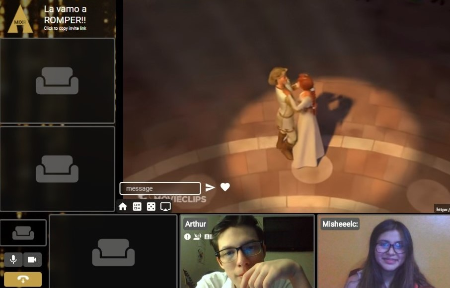

Mishel desde el día que te conocí supe que eras alguien muy especial, el 28 de noviembre del 2020 te convertiste en mi motivación para ser mejor cada día, haciendome el hombre más feliz del mundo sacandome una sonrrisa todos los dias con tus palabrita tan tiernas, es muy curioso pero te convertiste en mi persona favorita en todo el mundo con tus lindas ocurrencias señorita.

No soy perfecto mi amor, me equivoco muchas veces, lo sé pero estoy tratando de mejorar y corregir mis defectos, nunca he querido lastimarte, lo lamento mucho si he hecho, voy a ser un mejor novio, para mí tu eres lo más importe y ahora tengo mucho más claro de lo importante que es la comunicación y de que ese es el camino que debemos seguir para ser una relación saludable.

Tu ya me movias el mundo desde antes de declarte mi amor, un 17 de noviembre viendo Sherk ya estaba loco por ti, ese día nos olvidamos de todo y eramos solo tu y yo, sin preocupaciones, disfrutando de nuestras serie y peliculas, no quiero perder eso tan especial que tenemos tu yo, es algo de uno en un millón.
